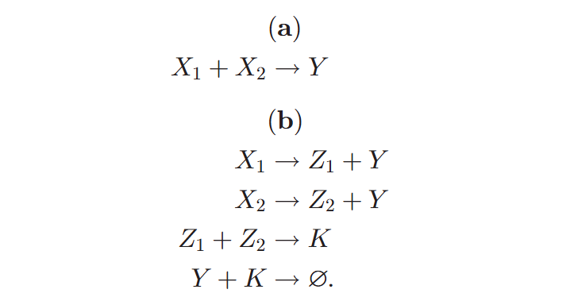
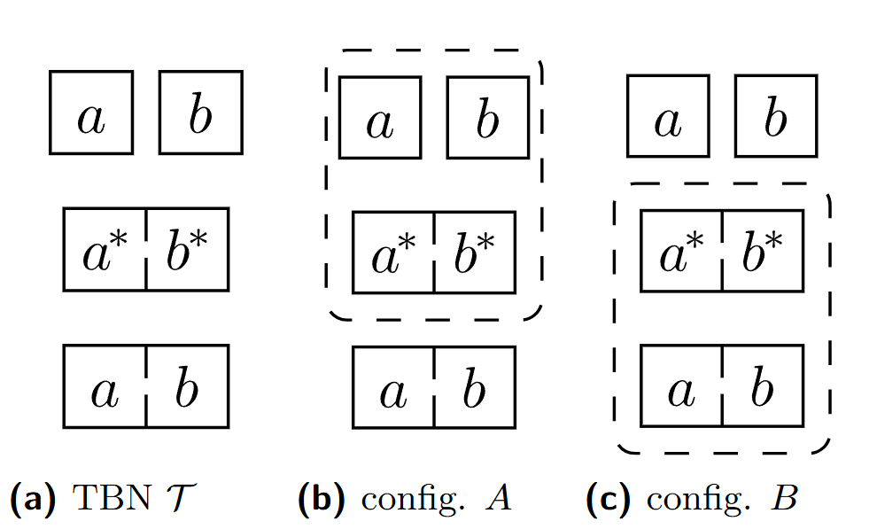
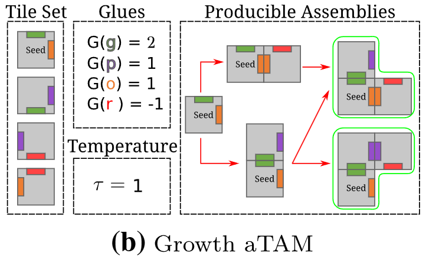
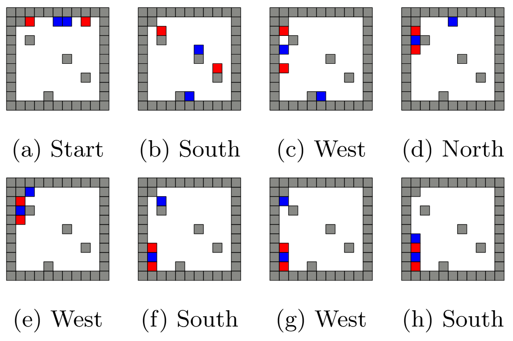

Research
My research lies broadly in unconventional computation, especially in mathematical models inspired by chemistry, thermodynamics, self-organization, and distributed control. I am interested in how ideas from computational complexity, information theory, thermodynamics, and the theory of computation can be used to understand the expressive power of abstract systems that resemble natural processes. Much of my work centers on molecular computing, algorithmic self-assembly, and robot motion planning.
Chemical Reaction Networks (CRNs)
Chemical Reaction Networks (CRNs) are abstract mathematical models of interacting chemical species, where reactions transform multisets of molecules over time. They provide a clean framework for studying molecular computation, distributed algorithms, and dynamical systems within a common formal language. Depending on the setting, CRNs can be viewed as stochastic chemical processes, deterministic population-level systems, or count-based computational devices. My work studies the expressive power of CRNs and related variants, with particular emphasis on efficient simulation between models, the complexity of reachability and termination, and the effect of restricting reaction rules.

Figure from or adapted from: Composable Rate-Independent Computation in Continuous Chemical Reaction Networks
Selected papers
- Programming and training rate-independent chemical reaction networks PNAS 2022Develops ways to program reaction networks whose answers do not depend on precise reaction rates, including translating trained neural networks into CRNs and demonstrating their behavior through simulations.
- Optimal Information Encoding in Chemical Reaction Networks DNA29, 2023Asks how compactly reaction rules can encode a program that produces an exact number of molecules, and establishes optimal bounds under the paper’s computation requirements.
- Reachability in Deletion-Only Chemical Reaction Networks DNA31, 2025Studies how difficult it is to determine which outcomes are possible when reactions can only remove molecules.
Thermodynamic Binding Networks (TBNs)
Thermodynamic Binding Networks (TBNs) are equilibrium models of molecular systems that focus on which assemblies are energetically favored, rather than the order in which they form. In a TBN, monomers bind through complementary domains to form polymers, and stable outcomes are determined by the competition between enthalpy, which favors additional bonds, and entropy, which favors larger numbers of separate complexes. This makes TBNs a useful abstraction for reasoning about self-organization and DNA nanotechnology at thermodynamic equilibrium. My work investigates the expressive limits of TBNs, the complexity of predicting stable and reachable configurations, and their relationship to more abstract thermodynamic models such as Thermodynamic Affinity Networks.

Figure from or adapted from: Brief Announcement: Barrier-1 Reachability for Thermodynamic Binding Networks is PSPACE-complete
Selected papers
- Thermodynamic Binding Networks Capture Equilibrium Monomer-Polymer Thermodynamics DNA32, 2026Shows that TBNs can represent the stable configurations of a more general model that assigns favorability to whole complexes, helping explain the expressive power of simple binding rules.
- Brief Announcement: Barrier-1 Reachability for Thermodynamic Binding Networks Is PSPACE-Complete SAND 2022Shows that deciding whether two configurations can be connected through a tightly limited energy barrier can be computationally difficult.
Tile Self-Assembly
Tile self-assembly studies how simple components with local binding rules can spontaneously organize into larger structures without centralized control. In these models, tiles act as programmable units whose compatible edges determine how assemblies grow, allowing geometry and computation to emerge from local interactions alone. Inspired by DNA tile nanotechnology, this area connects algorithm design, distributed computation, and the mathematics of shape formation. My work in tile self-assembly explores the power and limitations of various assembly models, including systems with repulsion, temperature changes, and signal passing, as well as how these models can build shapes or simulate other forms of computation.

Figure from or adapted from: Covert Computation in Self-Assembled Circuits
Selected papers
- Covert Computation in Self-Assembled Circuits ICALP 2019 / Algorithmica 2021Constructs self-assembling circuits that conceal their input and computational history while still reporting an output, using attractive and repulsive interactions.
- Self-assembly of Shapes at Constant Scale Using Repulsive Forces UCNC 2017 / Natural Computing 2019Investigates how repulsive interactions can help efficiently assemble shapes while keeping the enlargement of the target shape bounded by a constant factor.
- Self-Assembly of Any Shape with Constant Tile Types using High Temperature ESA 2018Shows how changing binding strengths and the attachment threshold can encode different target shapes using a fixed set of tile types. Here “temperature” is the model’s binding-strength threshold.
Robot Motion Planning
My work on robot motion planning focuses on highly constrained settings where large numbers of simple robots move under uniform global control signals rather than independent commands. In these models, every robot receives the same instruction at the same time, so geometry, obstacles, and swarm interactions determine what collective behaviors are possible. These systems are motivated by applications in microrobotics, programmable matter, and large-scale swarm control, and they raise natural questions about reachability, relocation, reconfiguration, and computational hardness. My research studies both the algorithmic possibilities and the complexity-theoretic limitations of such globally controlled robotic systems.

Figure from or adapted from: Uniform Robot Relocation is Hard in Only Two Directions Even Without Obstacles
Selected papers
- Full Tilt: Universal Constructors for General Shapes with Uniform External Forces SODA 2019Designs universal arrangements that can build families of shapes and patterns by changing the sequence of global directional commands.
- Hierarchical Shape Construction and Complexity for Slidable Polyominoes under Uniform External Forces SODA 2020Introduces a hierarchy of shapes and a shared-control construction that can build any size-bounded shape in that hierarchy. It also shows that deciding whether a target position can be occupied is computationally difficult even with simple square tiles.
- General Computation Using Slidable Tiles with Deterministic Global Forces ITCS 2026Shows that slidable tiles can simulate general-purpose computation even when the driving commands repeat in a fixed clockwise cycle.
Interested in exploring these ideas?
If you enjoy puzzles, algorithms, or asking why a system must behave a certain way, these topics offer many places to start. Research can involve constructing small examples, writing simulations, looking for counterexamples, and developing proofs.
You do not need to understand the selected papers before getting in touch. Tell me which example caught your attention and what you would like to learn: austin.luchsinger@utrgv.edu.
Collaborators
I have been fortunate to collaborate with researchers and students across molecular computing, self-assembly, algorithms, and swarm motion planning, including Alberto Avila-Jimenez, Divya Bajaj, Jose Balanza-Martinez, David Barreda, Keenan Breik, David Caballero, Angel Adrian Cantu, Jose-Luis Castellanos, Cameron Chalk, David Doty, Sarah-Laurie Evans, Mauricio Flores, Bin Fu, Luis Angel Garcia, Timothy Gomez, Arturo Gonzalez, Sarfraz Khurshid, Ryan Knobel, Cesar Lozano, Eric Martinez, Fernando Martinez, Aiden Massie, Eduardo Medina, Arnoldo Ramirez, Rene Reyes, Marco Rodriguez, Adrian Salinas, Pablo Santos, Ramiro Santos, Robert Schweller, David Soloveichik, Evan Tomai, Marko Vasić, Andrew Winslow, Tim Wylie, and And Kaan Ata Yilmaz.